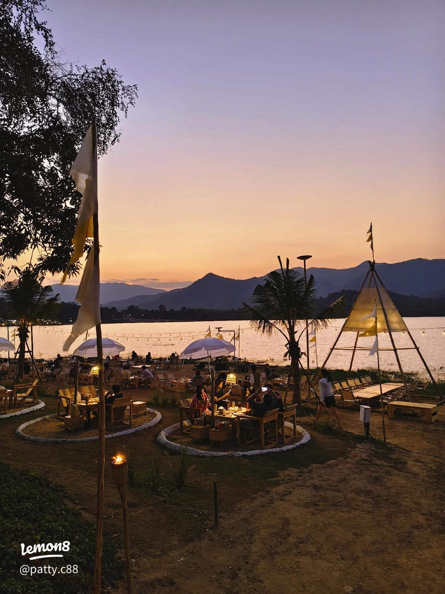

อ่างเก็บน้ำห้วยมะนาว
อ่างเก็บน้ำห้วยมะนาว สถานที่พักผ่อนท่ามกลางธรรมชาติ เงียบสงบ รายล้อมด้วยภูเขาและวิวสวย เหมาะสำหรับนั่งชิล ถ่ายรูป และชมบรรยากาศยามเย็น

หากคุณกำลังมองหาที่ท่องเที่ยวเงียบสงบท่ามกลางธรรมชาติในเชียงใหม่ พวกเราชาว UNSEEN ขอแนะนำ “อ่างเก็บน้ำห้วยมะนาว” จุดพักผ่อนวิวสวย รายล้อมด้วยขุนเขาและบรรยากาศสุดผ่อนคลาย
.. อย่าลืมมารีวิวให้ชาว UNSEEN ฟังด้วยนะ ..
แตงกวา | ★★★★☆ (2 วันที่ผ่านมา)
รีวิว : beautiful place ...
สาลี่ | ★★★★☆ (2 วันที่ผ่านมา)
รีวิว : สวยมากๆ ค่ะ ...
น้ำผึ้ง | ★★★★★ (7 วันที่ผ่านมา)
รีวิว : วิวสวยมาก
ส้มจี๊ด | ★★★★★ (14 วันที่ผ่านมา)
รีวิว : อากาศดี